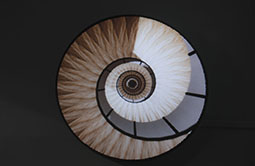

<!DOCTYPE html>
<html lang="es">
<head>
  
<meta charset="UTF-8">
<title>Cartografía Multimedial</title>
<link rel="stylesheet" href="css/estilos.css">
<body class="cartografia"></body>
<style>

.grafico{
  position: relative;
  height: 600px;
}

/* ===== EJES BLOQUEADOS (CLAVE) ===== */

.ejes{
  position:absolute;
  width:100%;
  height:100%;
  pointer-events:none;
}

/* ===== EJE Y ===== */

.ejeY{
  position:absolute;
  left:20px;
  top:50%;
  width:200px; /* 🔴 ancho fijo */
  text-align:center;
  transform:translateY(-50%) rotate(-90deg);
  color:#00e0ff;
  font-weight:bold;
  font-size:18px;
}

/* ALTO / BAJO */
.ejeYLabels{
  position:absolute;
  left:10px;
  top:0;
  height:100%;
  display:flex;
  flex-direction:column;
  justify-content:space-between;
  color:#00e0ff;
  font-weight:bold;
}

/* ALTO FINAL (CORRECTO) */
.ejeYAltoExtra{
  position:absolute;
  right:20px;
  bottom:10px;
  color:#00e0ff;
  font-weight:bold;
}

/* ===== EJE X (NO SE MUEVE MÁS) ===== */

.ejeX{
  position:absolute;
  bottom:10px;
  left:50%;
  transform:translateX(-50%);
  width:400px; /* 🔴 FIJO */
  text-align:center;
  color:#00e0ff;
  font-weight:bold;
  font-size:18px;
}

/* ===== LINEA ===== */

.linea{
  position:absolute;
  width:100%;
  height:100%;
  pointer-events:none;
}

.linea svg{
  width:100%;
  height:100%;
}

/* ===== NODOS ===== */

.nodo{
  position:absolute;
  width:90px;
  height:90px;
  border-radius:50%;
  overflow:hidden;
  cursor:pointer;
  z-index:2;
}

.nodo.escher{ border:3px solid #00e0ff; }
.nodo.hemmer{ border:3px solid #b84dff; }
.nodo.biopus{ border:3px solid #ffa500; }

.nodo img{
  width:100%;
  height:100%;
  object-fit:cover;
}

/* posiciones */
.escher{ left:15%; bottom:20%; }
.hemmer{ left:45%; bottom:45%; }
.biopus{ right:10%; top:20%; }

/* ===== TEXTOS ===== */

.labelNodo{
  position:absolute;
  width:260px;
  color:#ccc;
  font-size:13px;
  line-height:1.4;
}

.escherTxt{ left:15%; bottom:11%; }
.hemmerTxt{ left:40%; bottom:30%; }
.biopusTxt{ right:2%; top:40%; }

</style>
</head>

<body>

<header>
<h1>Cartografías e Hipótesis sobre las Artes Multimediales</h1>

<nav>
<a href="index.html">Inicio</a>
<a href="investigacion.html">Investigación</a>
<a href="analisis.html">Análisis</a>
<a href="cartografia.html">Cartografía</a>
</nav>
</header>

<section class="contenido">
<div class="layout">

<!-- ===== SIDEBAR ORIGINAL ===== -->
<div class="sidebar">

<div class="modo c1" onclick="setMode('espectador')">
<div class="iconoModo c1">👁️</div>
<div>
<strong>1. ESPECTADOR</strong><br>
<small>El rol evoluciona</small>
</div>
</div>

<div class="modo c2" onclick="setMode('obra')">
<div class="iconoModo c2">▢</div>
<div>
<strong>2. OBRA</strong><br>
<small>Se transforma con medios</small>
</div>
</div>

<div class="modo c3" onclick="setMode('autor')">
<div class="iconoModo c3">🧑</div>
<div>
<strong>3. AUTOR</strong><br>
<small>De individual a colectivo</small>
</div>
</div>

<div class="modo c4" onclick="setMode('proceso')">
<div class="iconoModo c4">⚙️</div>
<div>
<strong>4. PROCESO</strong><br>
<small>De cerrado a abierto</small>
</div>
</div>

<div class="modo c5" onclick="setMode('sintesis')">
<div class="iconoModo c5">🌐</div>
<div>
<strong>5. SÍNTESIS</strong><br>
<small>Desplazamiento histórico</small>
</div>
</div>

</div>

<!-- ===== GRAFICO ===== -->
<div class="grafico">

<!-- ===== LINEA ===== -->
<div class="linea">
<svg>
<defs>
<linearGradient id="grad" x1="0%" y1="100%" x2="100%" y2="0%">
<stop offset="0%" stop-color="green"/>
<stop offset="100%" stop-color="red"/>
</linearGradient>
</defs>

<line x1="22%" y1="72%" x2="47%" y2="52%"
stroke="url(#grad)" stroke-width="2" stroke-dasharray="4,4"/>

<line x1="47%" y1="52%" x2="78%" y2="30%"
stroke="url(#grad)" stroke-width="2" stroke-dasharray="4,4"/>
</svg>
</div>

<!-- EJES -->
<div class="ejes">
<div class="ejeY" id="ejeY"></div>

<div class="ejeYLabels">
<span>ALTO</span>
<span>BAJO</span>
</div>

<div class="ejeYAltoExtra">ALTO</div>

<div class="ejeX" id="ejeX"></div>
</div>

<!-- NODOS -->
<div class="nodo escher"></div>
<div class="labelNodo escherTxt" id="txtEscher"></div>

<div class="nodo hemmer"></div>
<div class="labelNodo hemmerTxt" id="txtHemmer"></div>

<div class="nodo biopus"></div>
<div class="labelNodo biopusTxt" id="txtBiopus"></div>

</div>
</div>
</section>

<script>

let data = {

espectador:{
ejeX:"participación / interacción",
ejeY:"Participación",
escher:"<b>Contemplación pura</b><br>El espectador observa desde fuera. No interviene ni modifica la obra. La experiencia es pasiva y basada en la percepción visual.",
hemmer:"<b>Percepción reactiva</b><br>La obra responde a la presencia del espectador. Su cuerpo o acción activa el sistema, generando una relación dinámica.",
biopus:"<b>Participación activa</b><br>El espectador interviene directamente en la obra. Se convierte en parte del sistema y modifica su desarrollo."
},

obra:{
ejeX:"grado tecnológico / materialidad",
ejeY:"Tecnología",
escher:"<b>Obra cerrada y material</b><br>Objeto físico, estable y autónomo. No cambia con el tiempo ni con el espectador.",
hemmer:"<b>Obra tecnológica reactiva</b><br>Sistema programado que integra sensores y datos. La obra responde en tiempo real.",
biopus:"<b>Obra híbrida y viva</b><br>Sistema abierto que combina biología, tecnología y entorno. La obra evoluciona y se transforma constantemente."
},

autor:{
ejeX:"individual → colectivo",
ejeY:"Autoría",
escher:"<b>Autor individual</b><br>La obra responde a una visión única. Control total del proceso creativo.",
hemmer:"<b>Autor expandido</b><br>El artista diseña sistemas que incluyen al espectador como co-autor parcial.",
biopus:"<b>Autor colectivo</b><br>La autoría se distribuye entre múltiples agentes: artistas, científicos, sistemas y público."
},

proceso:{
ejeX:"cerrado → abierto",
ejeY:"Apertura",
escher:"<b>Proceso cerrado</b><br>La obra está completamente definida desde su creación. No admite modificación.",
hemmer:"<b>Proceso generativo</b><br>La obra produce variaciones según estímulos. Hay reglas, pero resultados variables.",
biopus:"<b>Proceso abierto</b><br>Sistema en constante transformación. No hay resultado final fijo.",
},

sintesis:{
ejeX:"desplazamiento histórico",
ejeY:"Evolución",
escher:"<b>Representación</b><br>Predominio de la imagen y la ilusión. El arte como objeto de contemplación.",
hemmer:"<b>Interacción</b><br>El arte como experiencia. Relación entre cuerpo, tecnología y espacio.",
biopus:"<b>Integración</b><br>Fusión de sistemas vivos, tecnológicos y sociales. El arte como ecosistema.",
}

};

function setMode(m){
let d = data[m];

document.getElementById("ejeX").innerHTML = d.ejeX;
document.getElementById("ejeY").innerHTML = d.ejeY;

document.getElementById("txtEscher").innerHTML = d.escher;
document.getElementById("txtHemmer").innerHTML = d.hemmer;
document.getElementById("txtBiopus").innerHTML = d.biopus;
}

setMode("espectador");

</script>

</body>
</html>